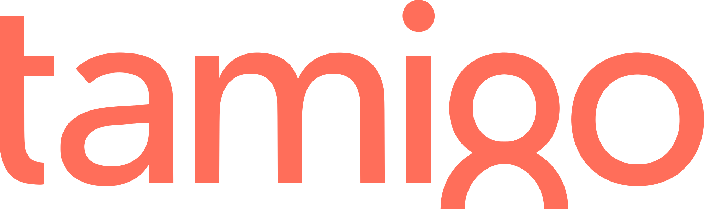

Datakildene
Vi kobler oss på det du allerede bruker.
Ingen ny kasse, ingen ny vaktplan, ingen ny regnskapsfører. Scope leser fra systemene som allerede står der.
32 systemer





Slik kobles det opp
Du gir Scope lesetilgang til systemene du allerede bruker. Vi setter opp forbindelsene sammen med deg — det tar som regel en halvtime på et videomøte, og du trenger ikke gjøre noe teknisk selv.
Tilgangen er begrenset til lesing. Scope endrer aldri noe i kassa, regnskapet eller vaktplanen din. Nøklene ligger på serveren vår, aldri i nettleseren.
Mangler systemet ditt?
Lista over er de vi har jobbet med så langt. Bruker du noe annet, si fra — de fleste systemer i denne bransjen har et API, og en ny tilkobling tar oss vanligvis et par uker.
Hva vi henter
- Fra kassa: salg per time, produkt, bord og betalingsmåte
- Fra regnskapet: varekost, lønn, leverandørbilag og bankposter
- Fra bemanningen: vaktplan, stemplede timer og lønnskostnad
- Fra levering: ordrer, provisjon og leveringstid
- Fra Yr: temperatur og nedbør for adressen din